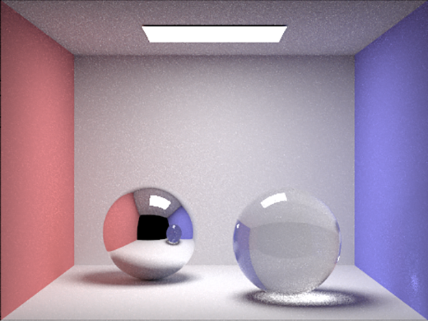

Hi. I'm Glenn
A software engineer living in the Bay Area.
I study Computer Science and Astrophysics at UC Berkeley. When I'm not in class, you can find me playing ultimate frisbee, hiking in Marin, or coding a new project.

Computer Graphics
An area of computer science I'm interested in right now is graphics. You can find more information about the projects I've done here.
Physics Research
In 2018 I had the opportunity to work at the US Air Force Research Lab in Albuquerque, NM. I spent the summer writing code for a thermosphere/ionosphere model that is currently being used to keep satellites safe in low earth orbit. More details about my work can be found on my resume.